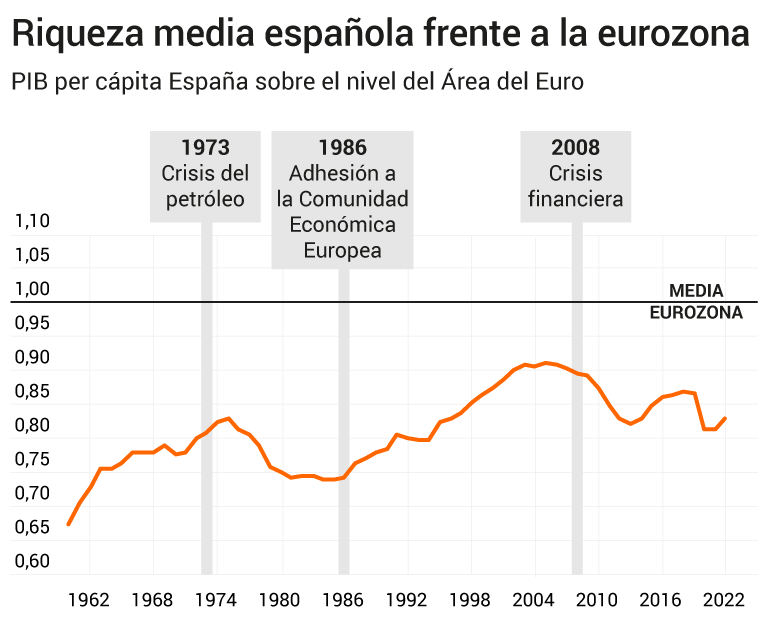
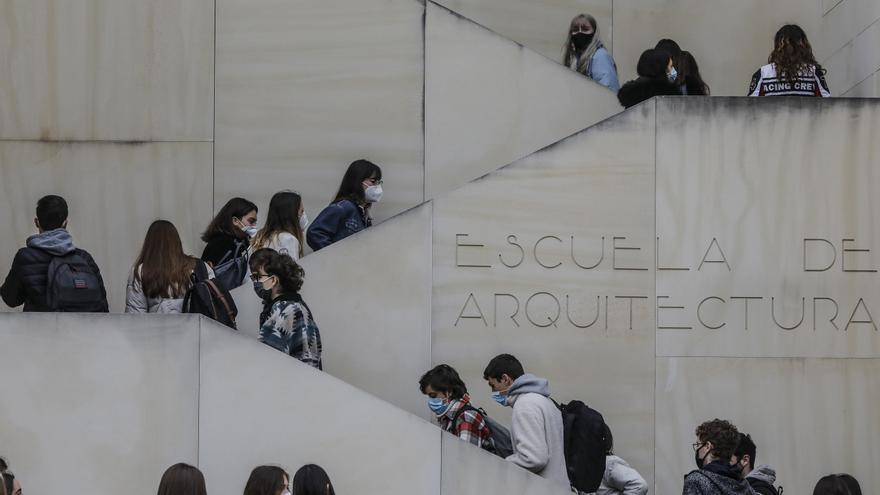
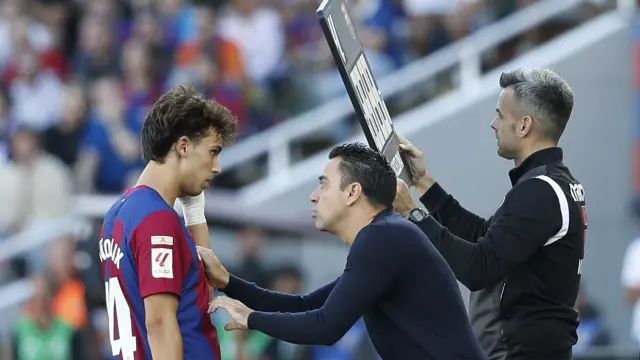

Titulares de Actualidad
Guerra de Gaza: El asedio israelí a Gaza causa 10.000 muertos en un mes

Así es el túnel sumergido más grande del mundo: unirá a Alemania con Dinamarca

España pierde el tren: su PIB per cápita frente a la eurozona y vuelve al nivel de los 70's
El próximo 1 de enero de 2024 43.000 becarios valencianos cobrarán y cotizarán a la seguridad social
Bruselas abre la puerta a iniciar negociaciones con Ucrania sobre su adhesión a la UE con condiciones
Al Barça se le desinfla el globo Las últimas actuaciones evidencian un bajón del equipo azulgrana
Inteligencia artificial al servicio de la salud: "La creación de un algoritmo podría salvar miles de vidas"

Las carreras previas al Maratón Valencia en Super Running La prueba solidaria por el Cáncer de Pulmón o el Medio Maratón de Paterna

La reacción granota no puede esperar
El técnico, Javi Calleja, recupera a casi toda la plantilla para medirse al Eibar